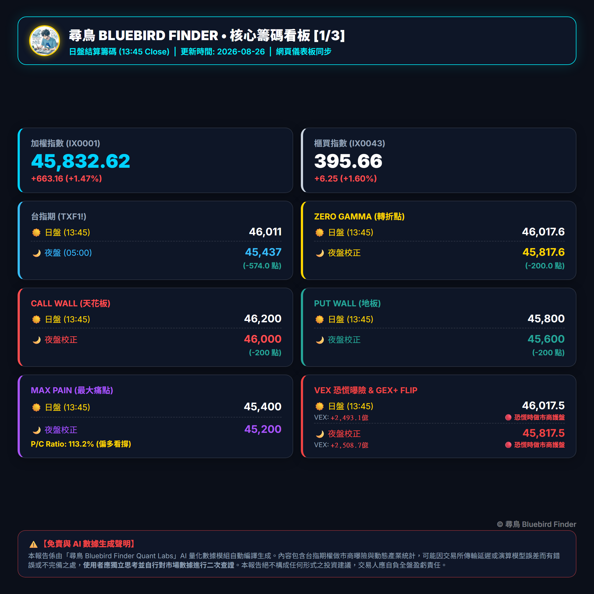
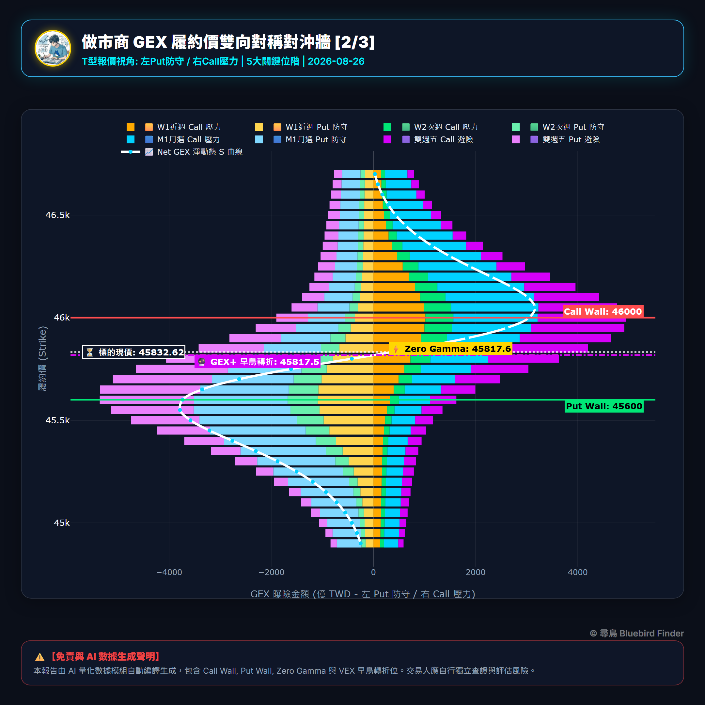
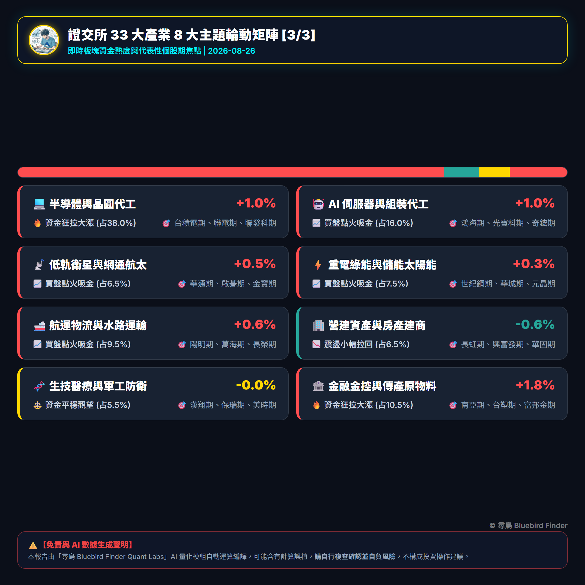

1. 甚麼是 Gamma Exposure (GEX)？
GEX 是衡量選擇權做市商（Market Maker）在特定履約價位，因標的物價格變動而必須進行動態避險（Delta Hedge）的金額規模。當 GEX 為正，做市商採「低買高賣」穩定市場；當 GEX 為負，做市商採「順風追跌殺跌」放大市場波動！
2. 關鍵指標解讀
- Zero Gamma (轉折點)：正/負 Gamma 的分水嶺。高於此點市場平穩；低於此點易引爆做市商追殺盤。
- Call Wall (天花板)：Call 做市商避險買單最多的履約價，通常為上檔強烈壓力區。
- Put Wall (地板)：Put 做市商避險賣單最多的履約價，通常為下檔強烈支撐區。
- Max Pain (最大痛點)：週三結算日讓選擇權買方總獲利最小、賣方（莊家）獲利最大的結算價格。
- VEX (恐慌曝險)：衡量隱含波動率 (VIX) 暴飆對做市商避險買賣盤的放大器。負值越深，盤中急殺時做市商越會追殺砍期貨！
- GEX+ Flip (早鳥防守線)：結合價格與恐慌感後的做市商真實防守底線。在暴跌中會比 Zero Gamma 更早發出避險告警！
3. 日夜盤切換與校正
本系統上半部卡片預設顯示 13:45 日盤官方定案數據，下半部顯示 05:00 夜盤收盤價校正數據，協助您精確判斷隔日開盤前的防守位移與價差。
📸 下載 IG / Threads 社群圖卡 (全套 3 張)


